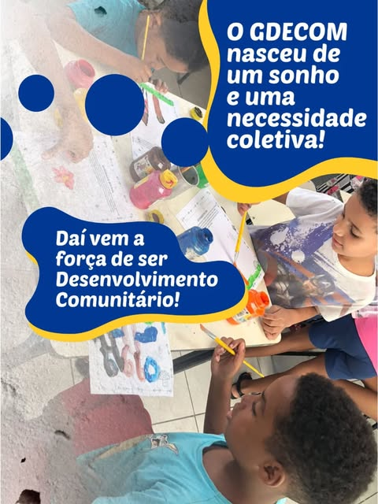

Convivência e vínculos
Serviço de Convivência e Fortalecimento de Vínculos (SCFV): grupos e atividades que fortalecem laços entre pessoas, famílias e comunidade.
Saiba mais sobre convivência e vínculos →O GDECOM é uma Organização da Sociedade Civil que promove desenvolvimento social com crianças, adolescentes, jovens e suas famílias — construído pela própria comunidade, há mais de quatro décadas.
O GDECOM é uma instituição cheia de história! A partir de agora, sempre que você encontrar um “Você sabia” no nosso feed, estaremos contando um pouco de nós, das nossas conquistas e dos nossos voos futuros! Cola com a gente!
Programas e atividades para crianças, adolescentes, jovens e famílias — sempre com a comunidade participando das decisões.
Serviço de Convivência e Fortalecimento de Vínculos (SCFV): grupos e atividades que fortalecem laços entre pessoas, famílias e comunidade.
Saiba mais sobre convivência e vínculos →Cursos gratuitos de qualificação para ampliar o acesso ao trabalho e à renda, em parceria com o poder público.
Saiba mais sobre qualificação profissional →Projetos como o Conecsons e o Verso Vivo aproximam jovens da música, da arte e da produção cultural.
Saiba mais sobre cultura e juventude →Campanhas de conscientização — como Agosto Lilás e Julho das Pretas — que defendem direitos e dão voz à comunidade.
Ver campanhas de cidadania e direitos →
Nasceu de um sonho coletivoNa década de 1980, as famílias das Vilas Vietnã, Carioca, Suzana e Primeiro de Maio enfrentavam um desafio comum: a falta de espaços seguros onde trabalhadores e trabalhadoras pudessem deixar seus filhos enquanto buscavam seu sustento.
A própria comunidade resolveu agir. A partir da união, da solidariedade e da mobilização de recursos próprios, os moradores fundaram os alicerces do que hoje é o GDECOM.
“Fortalecer vínculos é fortalecer vidas.”— Lema do trabalho social do GDECOM
Quer conhecer os projetos, participar das atividades ou apoiar o GDECOM? A porta está sempre aberta para a comunidade.
Fale com a gente Siga no Instagram (abre em nova aba)